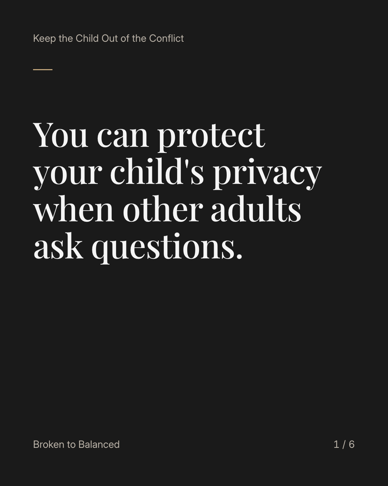
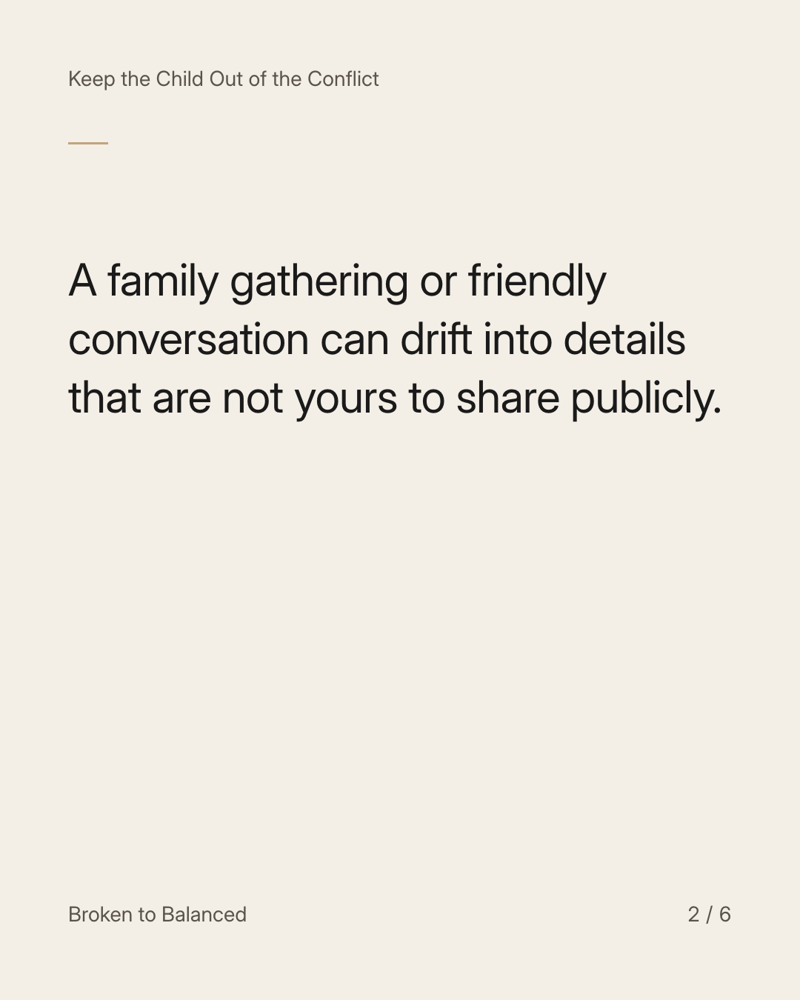
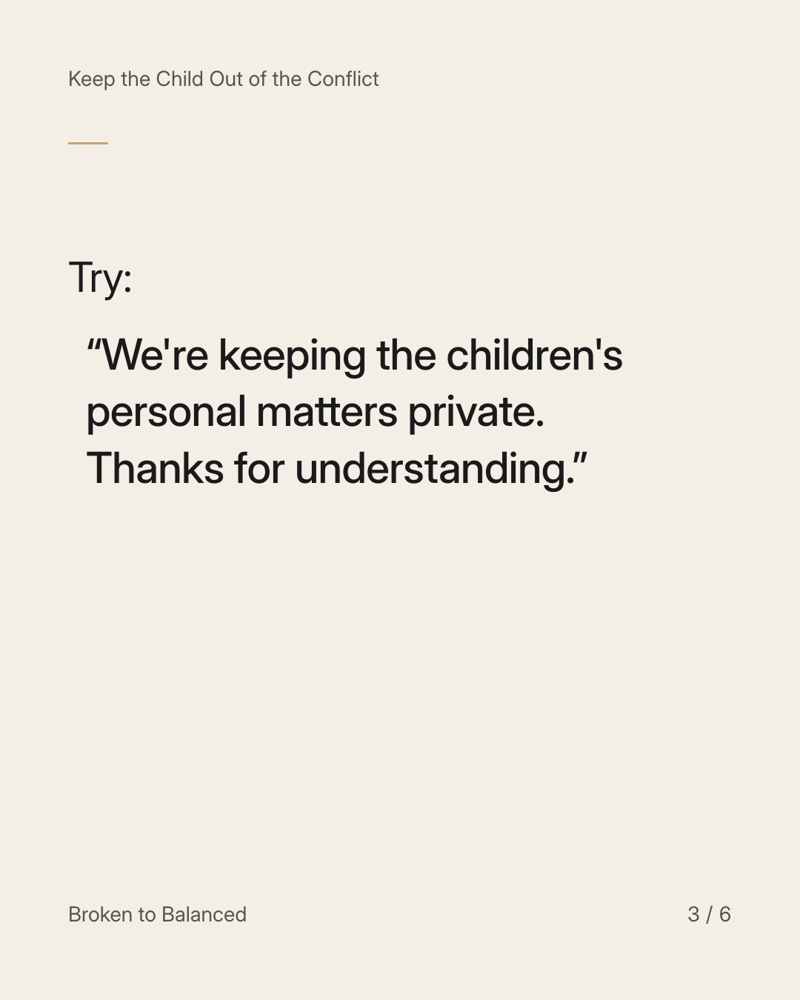
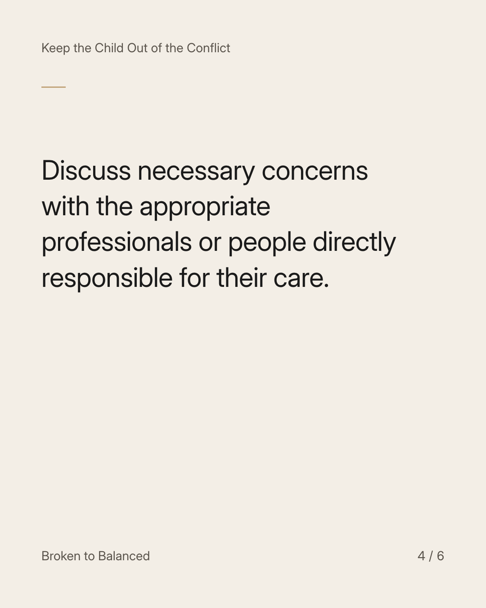
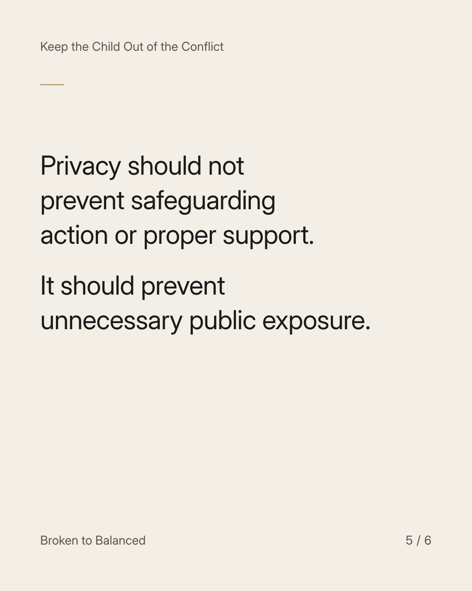
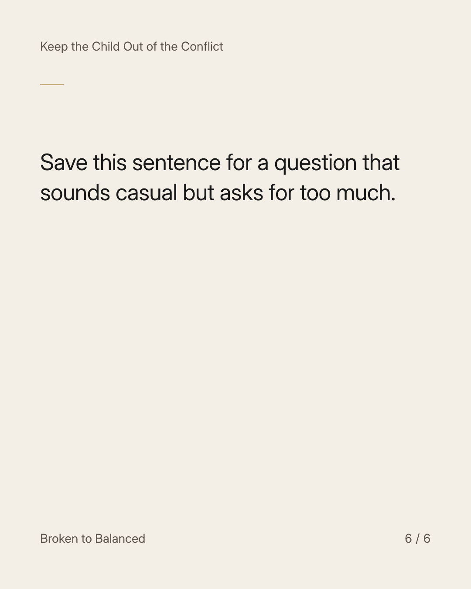

Exact text and accessibility text
You can protect your child's privacy when other adults ask questions.
Slide 1 of 6. You can protect your child's privacy when other adults ask questions.


Exact text and accessibility text
A family gathering or friendly conversation can drift into details that are not yours to share publicly.
Slide 2 of 6. A family gathering or friendly conversation can drift into details that are not yours to share publicly.


Exact text and accessibility text
Try: “We're keeping the children's personal matters private. Thanks for understanding.”
Slide 3 of 6. Try: “We're keeping the children's personal matters private. Thanks for understanding.”


Exact text and accessibility text
Discuss necessary concerns with the appropriate professionals or people directly responsible for their care.
Slide 4 of 6. Discuss necessary concerns with the appropriate professionals or people directly responsible for their care.


Exact text and accessibility text
Privacy should not prevent safeguarding action or proper support. It should prevent unnecessary public exposure.
Slide 5 of 6. Privacy should not prevent safeguarding action or proper support. It should prevent unnecessary public exposure.


Exact text and accessibility text
Save this sentence for a question that sounds casual but asks for too much.
Slide 6 of 6. Save this sentence for a question that sounds casual but asks for too much.
Exact caption
Plain-text fallback: select and copy the caption.